Столярные и плотницкие инструменты.


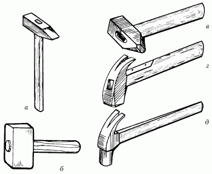
Рис. 56. Виды молотков: а – молоток плотничный обычный; б – киянка; в – молоток паркетный; г – молоток плотничный с квадратным обушком; д – молоток плотничный с круглым обушком.
МолотокЯвляется самым важным инструментом в плотничных и различных других работах. В продаже молотки можно встретить как готовые, так и сборные. Для изготовления рукоятки используется древесина кизила, груши, акации, которая отличается особой твердостью и дешевизной, а для бойка применяется только высококачественная сталь. Но даже этот, на первый взгляд самый простой инструмент имеет несколько разновидностей.
Молоток плотничныйСостоит из двух частей. Первое – это ручка, она может быть как деревянная, так и железная. Желательно подбирать для удобства в работе молоток с деревянной ручкой, благодаря которой его вес становится значительно меньше.
Вторая часть – это сам молоток, с одной стороны которого находится тупая ударная часть, а с другой – шлиц, предназначенный для выдергивания гвоздей. Длина рукоятки – 30 см, диаметр – 3,5 см. Размер молотка – 20 х 2,5 см. Вес – около 3–4 кг.
Молоток обычныйЕго можно найти в любом хозяйственном магазине. Ударная поверхность этого инструмента имеет прямоугольную или квадратную плоскость. Другой конец полотна заострен и часто используется для выпрямления погнувшихся гвоздей.
Деревянный молотокНазывается также киянкой и используется для притирки деревянных массивов при склеивании. Также довольно часто применяется при работе с долотом, ручка которого сделана из дерева, так как удары обычным молотком могут просто разбить ручку и вывести долото из строя на долгое время.
ТопорЭтот инструмент незаменим в строительных и плотничных работах. Стоит только вспомнить, какие чудеса вытворяли с ним старые мастера. Устроен топор проще молотка, но имеет несколько видов, различающихся по форме топорища и лезвия, а также по видам работы, для которой используется.
Многое зависит от угла расположения топорища относительно рукоятки. Зачастую лезвие затачивают с обеих сторон, что позволяет использовать его сразу для двух видов работ: для рубки и тесания. Заточенный только с одной стороны топор применяется для тесания древесины.
Прямой топорИспользуется только для рубки древесины. Его топорище относительно рукоятки должно быть расположено под углом не меньше 90°.
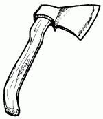
Рис. 57. Прямой топор.
Остроугловой топорПредназначен для первичной обработки древесины: удаления коры и выступающих сучков на стволе. Топорище этого типа топора относительно рукоятки расположено под углом 80–85°.
Тупоголовый топорИмеет некоторые особенности. Его топорище относительно рукоятки расположено под углом 100° или чуть меньше. Такой топор используется для наиболее грубых работ, например при сооружении сруба деревянного дома или бани из целых стволов.
Затачивают топор на круглом мокром точиле, держа его одной рукой за обух, другой – за середину топорища. Точило должно вращаться навстречу лезвию, а не наоборот. Если топор был сильно зазубрен, то режущую кромку перед заточкой сначала следует выровнять напильником, затем снять образовавшиеся заусенцы. Для этого топор затачивают на бруске: берутся обеими руками за обух и фаской лезвия водят по поверхности бруска вперед и назад, переворачивая поочередно на каждую сторону. Брусок необходимо смачивать водой, иначе он быстро засалится. После заточки топор следует править оселком. Оселок смачивают машинным маслом и круговыми движениями без нажима водят то по одной, то по другой фаске топора.
В домашних условиях приходится ограничиваться заточкой на бруске и правкой оселком. Но ни в коем случае не следует точить топор на шлифовальном круге электрического точила. Лезвие, конечно, можно сделать острым, но при частом использовании топор быстро затупится.
Следует быть очень осторожным и внимательным при обращении с этим видом инструмента.
НожовкаВ зависимости от толщины полотна и расстояния между зубьями можно получить разное качество отпиленной поверхности. Каждый из всех существующих типов ножовок используется только для определенного вида работы. Также в зависимости от того, что нужно выпилить, потребуются ножовки с толстым или тонким полотном, с крупными или мелкими зубьями.
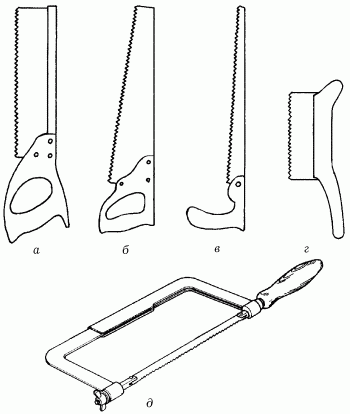
Рис. 58. Виды ножовок: а – ножовка с обушком; б – ножовка поперечная широкая; в – ножовка узкая; г – ножовка-наградка; д – ножовка по металлу.
Широкая ножовкаИспользуется при распиле древесины поперек волокон. Зубцы такой ножовки заточены под углом 45° и разведены в стороны по 0,5 мм от центральной оси.
Узкая ножовкаИспользуется при распиле тонких досок и ДСП, а также при выпиливании криволинейных деталей. Размер разводки и способ заточки зубьев ничем не отличаются от затачивания широкой ножовки.
Ножовка с обушкомПрименяется для выпиливания небольших деталей и при подгонке соединений. Особенность этой ножовки заключается в том, что полотно по всей длине укреплено тонкой дощечкой, так как оно не может самостоятельно удерживать направление распила и очень часто ломается при работе.
Выкружная ножовкаПрименяется для опиливания по кривым линиям. При необходимости выпилить отверстие (круглое, квадратное и т. п.), в заготовке необходимо сделать одно или несколько отверстий, чтобы конец полотна ножовки входил в них свободно.
Существует много видов пил, но для начинающего мастера будет вполне достаточно одной ножовки – при небольшом объеме работ она вполне пригодна как для продольного, так и для поперечного пиления. Кроме того, благодаря своему широкому полотну ножовка в неопытных руках идет прямее.
Лучковая пилаИспользуется в случае, если предстоит выполнить большой объем плотничных и столярных работ. Эта пила более производительна, чем ножовка, и позволяет менять полотна: для продольного и поперечного пиления, с мелкими и крупными зубьями.
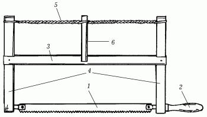
Рис. 59. Лучковая пила: 1 – полотно; 2 – ручка; 3 – средник; 4 – стойки; 5 – тетива; 6 – закрутка.
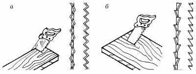
Рис. 60. Ножовки: а – поперечная; б – продольная.
Как выбрать хорошую ножовку?Ножовка с крупными зубьями пилит быстрее, но пропил получается грубый, с неровными краями. Степень заточенности можно проверить, проведя большим пальцем по кончикам зубьев. Разводку проверяют на глаз: зубья должны быть отогнуты в стороны равномерно, иначе пилу будет заносить в сторону. Одновременно проверяют ровность полотна. Даже при незначительном изгибе пилу будет заедать. Полотно пилы должно гнуться и быстро распрямляться. У хорошей пилы зубья в средней части полотна слегка выступают, образуя небольшую дугу. В этом случае при сцеплении с заготовкой в процессе пиления участвует меньше зубьев, при этом давление возрастает и пила работает лучше.
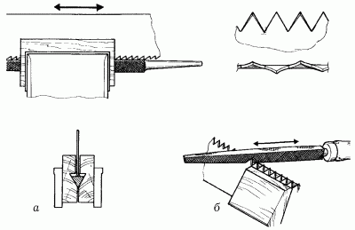
Рис. 61. Подготовка ножовки к работе: а – выравнивание зубьев; б – заточка.
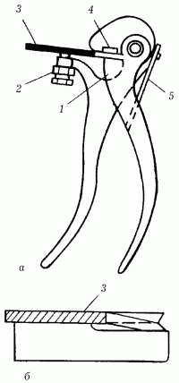
Рис. 62. Приспособления для разводки зубьев пилы и проверки ее правильности: а – клещи (1 – выступ; 2 – гайка установочного винта; 3 – полотно пилы; 4 – пластинка; 5 – пружина); б – шаблон.
Большое значение имеет ручка. Она может быть деревянной или пластмассовой, главное, чтобы рука чувствовала себя удобно. Весьма неудобна в работе железная штампованная ручка – от нее быстрее устает рука, образуются мозоли.
При хранении пилы на ее зубья лучше надеть разрезанный вдоль отрезок шланга или ПВХ-трубки.
Чтобы пила не застревала в древесине, ее зубья должны быть разведены – отогнуты через один влево и вправо. За счет этого ширина пропила получается чуть больше толщины полотна пилы, благодаря чему она не застревает в пропиле.
Для разведения пилы существует специальный инструмент – разводка, с помощью которой зубья пилы отгибают в стороны примерно на 0,5 мм. При этом развод зубьев с каждой стороны должен быть одинаковым. Если после разводки отдельные зубья оказываются отогнутыми больше других, их исправляют – отгибают в одну линию с остальными. Если зубья разные по высоте, то перед заточкой их выравнивают при помощи напильника.
Способы пиленияПиление древесины подразделяется на две разновидности. Во-первых, при механическом распиле кряжа существует вероятность получить доски различной степени качества. Во-вторых, при помощи ручного пиления можно из полученных досок сделать определенные виды деталей.
Первая разновидность распила не будет рассматриваться, так как это требует специального оборудования, которое используется только на деревообрабатывающих предприятиях.
Различные детали и заготовки из досок можно выполнить на верстаке в домашних условиях. В зависимости от того, насколько толстым является массив подлежащей обработке древесины, нужно выбрать ту или иную пилу.
От способа закрепления заготовки на верстаке зависит используемый при работе способ пиления.
Если заготовка закреплена горизонтально, а пила при этом находится перпендикулярно к детали, то данный прием называется горизонтальным. При этом место распила должно немного выходить за поверхность верстака, чтобы при работе нельзя было повредить рабочую доску, да и сама процедура будет намного удобнее.
Особенность поперечного распила заключается в том, что он проходит не вдоль волокон, а поперек них. При этом существует вероятность образования отколов как с оставляемой части, так и с отпиливаемой. Хорошо, если откол произошел на отпиливаемом куске, так как убрать лишнюю древесину с нужной части можно достаточно легко. Но если откол произошел именно там, где необходима ровная поверхность, придется либо реставрировать древесину, либо выпиливать новую деталь. Избежать таких неприятностей поможет ножовка с «мышиным» зубом.
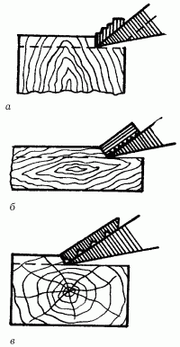
Рис. 63. Основные виды резания древесины: а – резание в торец; б – резание вдоль волокон; в – резание поперек волокон.
Если необходимо отпилить доску или брусок под прямым углом или под углом 45°, а под рукой уже есть стусло, то нужно постараться ровно уложить доску в желоб, прижать к дальней от себя стороне и, не передвигая заготовку, отпилить лишний кусок.
При распиле следует сделать несколько движений лезвием ножовки по уже намеченной линии, благодаря этому лезвие укрепится в массиве древесины, а в дальнейшем потребуется только корректировать движения ножовки, если ее полотно будет пытаться обойти попавшийся на месте распила сучок или трудный участок.
Усилия работающего сводятся только к наблюдению за равномерностью проникновения зубьев по всему участку. Больших физических нагрузок при правильном пилении быть не должно, так как достаточно небольшой нажим на ножовку обеспечит ровный пропил.
Во время этой операции заготовку лучше всего расположить так, чтобы отпиливаемый кусок находился с левой стороны. При завершении пиления свободная левая рука легче удержит ненужный кусок и не даст ему упасть на ноги. Все движения при выпиливании детали делают вразмах, полностью проводя полотно ножовки по распилу, чтобы не возникало зажима полотна в распиле.
Строгальные инструменты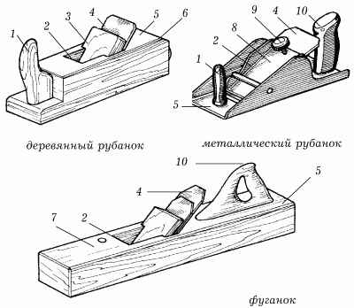
Рис. 64. Элементы строгального инструмента: 1 – державка; 2 – леток; 3 – клин; 4 – нож; 5 – корпус; 6 – упор; 7 – пробка; 8 – прижим; 9 – винт; 10 – ручка.
Данные инструменты предназначены для строгания деревянных деталей, которое заключается в выравнивании поверхности после пиления.
ШерхебельПрименяется для грубой обработки древесины. С его помощью можно подготовить поверхность для дальнейшего выравнивания и убрать все неровности, образовавшиеся после распила. Особенность строения такого рубанка заключается в том, что фаска с ножа снята полукругом. Шерхебель должен быть массивным и тяжелым, поэтому чаще всего его корпус делается металлическим.
Фуганок и полуфуганокНеобходимы при строгании поверхностей больших и длинных досок. Такое предназначение объясняется длиной колодки. У полуфуганков она составляет 50–60 см, а у фуганков – 70–80 см. Ножи должны быть шириной около 5–8 см. После обработки поверхности обязательно пройдитесь двойным рубанком, лезвие которого выступает не больше чем на 0,3 мм.
Одинарный рубанокИспользуется для выравнивания поверхностей после работы шерхебелем. Лезвие этого рубанка в ширину составляет около 4 см или больше. Стружка из-под лезвия выходит ровная и практически не ломается. Но при обработке поверхности куски древесины могут откалываться или образовывать задиры.
Двойной рубанокПрименяется только для зачищения поверхности и окончательной обработки. После строгания этим рубанком древесина приобретает ровную, почти зеркальную поверхность. Получение такого высокого качества обработки объясняется строением самого рубанка. На каждый его нож обязательно крепится стружколом, который защищает поверхность от задиров и отколов.
ШлифтикПредставляет собой укороченный рубанок, но имеет два узких, косо поставленных ножа. Этим рубанком очень легко зачищать образовавшиеся при строгании шерхебелем задиры. В его конструкции не предусмотрен стружколом, поэтому из-под лезвия всегда выходит тонкая, закручивающаяся лента. Но и это может привести к образованию отколов. Для модернизации шлифтика можно снабдить его стружколомом.
ЦинубельВнешне он очень похож на рубанок. Его предназначение – это выравнивание поверхности для последующего склеивания. Также хорошо цинубелем удаляются различного рода свилеватости, задиры и сучковатости. Кроме того, если им обработать фанеру, а затем обклеить шпоном, то получится покрытие высокого качества.
ЗензубельПри помощи этого инструмента выбирают и зачищают четверти в различных деревянных изделиях.
ФальцгебельДанный инструмент используется для выбирания фальцы и четверти при изготовлении оконных и дверных рам.
ГорбачПрименяется при строгании вогнутых цилиндрических поверхностей.
СтроганиеПри строгании поверхности необработанной доски сначала по направлению волокон, а затем поперек них можно удалить неровности. Все эти особенности сводятся только к использованию специального ножа и его правильной постановке. Края лезвия должны выступать, образуя внутри небольшую ложбинку, поэтому во время строгания на поверхности образуются небольшие валы. Нож относительно поверхности ставится под углом примерно 70–80°.
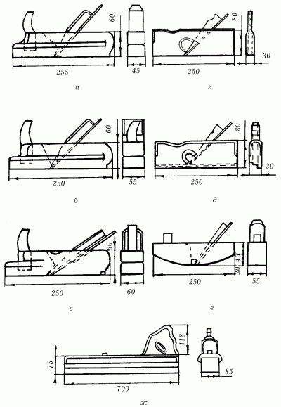
Рис. 65. Виды строгального инструмента: а – шерхебель; б – одинарный рубанок; в – двойной рубанок; г – зензубель; д – фальцгебель; е – горбач; ж – фуганок.
Последовательность обработки древесины рубанкамиПриготовленную к отделке деталь укладывают на верстак и закрепляют. Прежде всего следует приступить к грубому выравниванию поверхности, для чего используется шерхебель. Чтобы не снять слишком много древесины, движения строгающего должны быть направлены поперек волокон, а не вдоль. Если на пути следования шерхебеля встретились свилеватости, которые затрудняют дальнейшую обработку, то не следует делать на них упор, так как в противном случае древесина может отколоться и брусок станет не пригодным для дальнейшей работы.
После того как поверхность детали была обработана шерхебелем, ее следует зачистить одиночным, а затем двойным рубанком.
Если же приходится работать с длинными деталями, то в этом случае лучше всего использовать фуганок или полуфуганок. Движение рубанка по поверхности должно быть направлено вдоль волокон, а не против. Только благодаря этому удастся сделать поверхность ровной и гладкой.
Во время строгания торцов досок делают несколько плавных движений рубанком с одного края к центру, а затем от другого края к центру. Это поможет избежать отколов и отщепов.
Стамески и долотаЭти деревообрабатывающие инструменты изготавливают из высококачественной стали, у них хорошо отточенная режущая кромка.
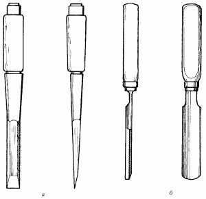
Рис. 66. Деревообрабатывающие инструменты: а – стамески; б – долота.
Прямая стамескаЧаще всего используется для вырезания прямоугольных углублений. При этом ширина полотна позволяет сделать как большие, так и маленькие отверстия. Чаще всего ширина полотна не превышает 6 см, но не может быть меньше 3 мм. Как правило, у прямых стамесок фаска с полотна снимается только с одной стороны, а толщина этой фаски колеблется от 0,5 до 1,5 см, при этом меняется и угол заточки ножа.
Полукруглая стамескаИспользуется там, где необходимо сделать круглое отверстие или углубление.
Без нее невозможно обойтись при выравнивании поверхности полукруглых углублений. Кроме того, используя полукруглую стамеску, можно сделать плавную линию, которую нельзя получить при использовании прямой стамески.
Между собой полукруглые стамески различаются по ширине полотна, по радиусу окружности и по глубине проникновения стамески в массив древесины. В зависимости от этого различают крутые, отлогие или глубокие полукруглые стамески. Существует еще одно название для глубоких стамесок – церазики.
В минимальном столярно-плотничном наборе обязательно нужно иметь 2 полукруглые стамески с шириной полотна около 10–12 мм, одна из которых должна быть крутой, а другая – отлогой.
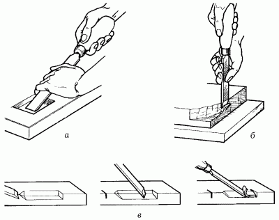
Рис. 67. Приемы работы со стамеской: а – зачистка стенок; б – снятие фасок; в – снятие фаски вдоль волокон.
Угловая стамескаИспользуется для выборки древесины при получении точных геометрических углублений. Угловые стамески различаются между собой по ширине полотна и по углу между фасками лезвия, который может колебаться от 45 до 90°.
Стамески-клюкарзыНеобходимы для выборки древесины при образовании углублений там, где невозможно использовать другие инструменты, и там, где при выборке требуется ровная поверхность дна. Единственное их отличие от всех выше рассмотренных – изогнутость полотна. Такие стамески бывают угольными, прямыми и полукруглыми. У каждого типа стамесок-клюкарз есть свои разновидности: по ширине полотна, по глубине снятия фаски при заточке, по величине радиуса. Есть и еще одна характеристика, применимая только по отношению к клюкарзам, – характер и величина изгиба.
ДолотоВнешне похоже на стамеску, но это совершенно другой инструмент. Долото предназначено для долбления древесины, и поэтому на ручке закрепляется металлический наконечник, который не позволяет растрескаться древесине от ударов молотка. Кроме того, чтобы не повредить рукоятку, а также для лучшего проникновения лезвия в массив древесины долото используется только в комплекте с деревянным молотком – киянкой.
Долото имеет более массивное полотно, чем стамеска.
В зависимости от вида работ долота разделяются на столярные и плотничные.
Ширина рабочего полотна столярной стамески не превышает 15 мм, а полотно плотничного долота имеет ширину 20 мм. Полотно столярного долота, в отличие от плотничного, у основания не расширяется.
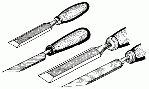
Рис. 68. Виды заточки долот.
ДолблениеНачиная долбление, предварительно тщательно размечают заготовки, при этом, если отверстие должно получиться сквозным, его размечают с обеих сторон. После этого заготовку неподвижно фиксируют на рабочем столе, подложив под нее обрезок доски, и делают неглубокие просечки стамеской или долотом по контуру разметочных линий, оставляя припуск 1–1,5 м для последующей зачистки. Если этого не делать, края отверстия получатся неровными, с отщипами.
При долблении инструмент ставят поперек волокон вертикальной фаской внутрь гнезда на риску и ударяют молотком так, чтобы лезвие вошло в древесину на 3–5 мм. Затем долото или стамеску вынимают и, сделав небольшой отступ внутрь гнезда, устанавливают наклонно, чтобы подрубить волокна древесины. Эту операцию повторяют до тех пор, пока гнездо не достигнет необходимой глубины (если оно не сквозное). Затем в той же последовательности это проделывают с другого конца гнезда. Сквозное отверстие долбят точно так же – сначала до половины толщины детали, затем заготовку переворачивают и таким же образом долбят с другой стороны.
Зачищая выдолбленные отверстия, вырезая гнезда под оконные и дверные петли, зачищая торцы, снимая продольные и поперечные фаски, стамеску берут правой рукой за ручку, а левой обхватывают ее лопасть. Правая рука придает инструменту движение, а левая регулирует направление резания и толщину стружки.
Работа облегчится, а поверхность получится чище, если стамеску направлять чуть наискось по отношению к волокнам древесины. При обработке закругленного конца торец зачищают стамеской, фаска которой направлена наружу. Для правильного снятия фаски вдоль волокон на всю длину бруска делают надрезы пилой и снимают от середины к концам фаски, после чего выравнивают стамеской запилы. Если фаска длинная, большую часть ее можно обработать рубанком. Торцевую фаску снимают от концов к середине.
При долевой подрезке нужно быть особенно осторожным, если приходится двигать стамеску против волокон. В этом случае инструмент может пойти по волокну в глубь детали и она будет испорчена. Такие срезы лучше делать наискось.
Не следует пользоваться долотом там, где можно обойтись стамеской, – изделие получится аккуратнее. После работы лезвия долот и стамесок нужно протереть тряпкой и слегка смазать машинным маслом. Чтобы не испортить режущую поверхность долота или стамески, никогда не используйте инструмент в качестве рычага, зубила, клина, отвертки, ножа для нанесения замазки и т. п.
НожиНож-косяк предназначен для резания небольших углублений в массиве древесины, а также для разрезания шпона на куски. Лезвие ножа-косяка скошено под углом 30–40°, а полотно ножа может варьироваться в зависимости от его предназначения от 4 мм до 5 см.
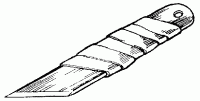
Рис. 69. Нож-косяк.
Заточка на лезвии ножа может быть выполнена как с одной стороны, так и с двух; поэтому различают ножи с одной и двумя фасками.
Ножи с одной фаской бывают правые и левые в зависимости от того, с какой стороны снята фаска.
Ножи с одной фаской используются только при работе либо правой, либо левой рукой.
Такие ножи более специфичны, чем ножи с двумя фасками, и позволяют прорезать древесину только с той стороны, с какой необходима прорезка.
Ножи с двумя фасками в работе универсальны, но прорезают древесину сразу с двух сторон от лезвия. Их основное предназначение – простое прорезание.
Нож-цикля используется для такой операции, как циклевание, и представляет собой режущий нож, закрепленный в рукоятке из твердых пород древесины. При заточке фаска снимается только с одной стороны на 45°, что позволяет ножу скользить по поверхности, не углубляясь в массив, и снимать тонкую стружку.
Клещи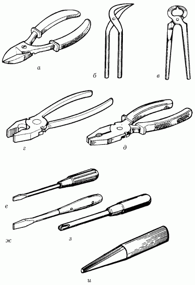
Рис. 70. Столярные и плотничные инструменты: а, б – кусачки; в – клещи; г, д – пассатижи; е, ж – плоские отвертки; з – крестовая отвертка; и – добойник.
Для работы с древесиной необходимы клещи. Их основное предназначение – выдергивание гвоздей, откусывание шляпок гвоздей, загибание проволоки и гвоздей при креплении. Имеются разновидности клещей. Различают острогубцы, плоскогубцы и круглогубцы.
ДобойникВ столярных и плотничных работах используется для заглубления шляпки гвоздя в массив древесины.
ОтверткиДля крепления деревянных деталей при помощи шурупов понадобятся различные отвертки. В зависимости от паза на шляпке шурупа необходимо иметь два типа отверток: клинообразную и крестообразную.
ЗажимыНеобходимы при склеивании, стягивании и креплении деталей. Это достаточно большая группа приспособлений, которые используются в столярных и плотничных работах.
В качестве зажимов выступают не только струбцины. Их металлическая конструкция не всегда пригодна для крепления деталей, так как зачастую оставляет следы на поверхности. Кроме струбцин используют ваймы, прессы, тиски. Также довольно часто применяются куски резины, веревки или деревянные бруски.
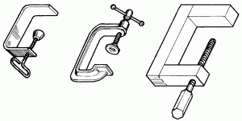
Рис. 71. Струбцины.
НапильникДанный инструмент различной формы используется для окончательного шлифования поверхности, снятия всех заусенцев, неровностей и шероховатостей.
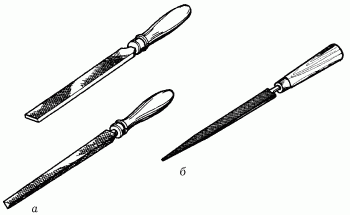
Рис. 72. Виды напильников: а – напильники; б – рашпиль.
ДрельНеобходима для высверливания отверстий в массиве древесины под шурупы или шипы. Дрель обязательно коплектуется набором сверл различного диаметра и формы.
ЗенковкаДля отделки углублений, имеющих цилиндрическую или коническую форму, применяют зенковку. Ее используют также для создания фасок высверленных отверстий под головки винтов, болтов и заклепок.
Различают два вида зенковки – цилиндрическую и коническую.
Цилиндрическая имеет хвостовик, рабочую часть, состоящую из 4–8 зубьев, и направляющую цапфу, которая опускается в высверленное отверстие, благодаря этому совмещаются ось отверстия и ось полученного зенковкой углубления. Коническая зенковка состоит из хвостовика и рабочей части. Углы конуса зенковки имеют значения 60, 90 и 120°.
ЗенкерПрименяют для доводки отверстий, которые были получены разными способами – сверлением, долблением и т. д. По внешнему виду зенкер напоминает сверло. Но, в отличие от него, зенкер имеет три-четыре режущие кромки. Хвостовик обычно зажимается в патроне.
При доводке высверленного сверлом отверстия зенкером диаметр сверла должен быть меньше диаметра готового отверстия.
ПробойникПри помощи этого инструмента можно получить отверстия различного диаметра.
Столярные и плотничные работы Древесина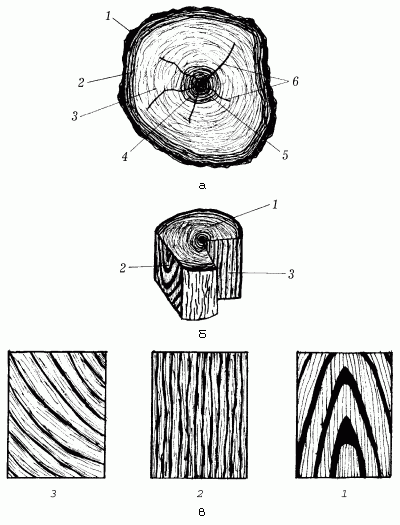
Рис. 73. Виды разрезов древесного ствола и их текстура: а – составные части поперечного распила ствола: 1 – лубяной слой коры; 2 – камбий; 3 – заболонь; 4 – ядро; 5 – сердцевина; 6 – сердцевинные лучи; б – основные разрезы ствола: 1– торцевой разрез; 2 – тангентальный разрез; 3 – радиальный разрез; в – текстура древесины сосны на трех разрезах: 1 – на поперечном; 2 – на радиальном; 3 – на тангентальном.
Ни один из строительных материалов не обладает такими качествами, как древесина. Она наиболее удобна в обработке. Кроме того, это один из самых прочных, легких материалов, долго сохраняющий тепло и приятный запах. Из дерева можно сделать все, что угодно: от простой деревянной ложки до самолета. Хотя и то и другое потребует усилий, усердия и терпения.
Для того чтобы приступить к работе с древесиной, необходимо запастись выдержкой. Не беда, если что-то не будет получаться с первого раза, все приходит с опытом. Хороший глазомер и твердая рука станут теми помощниками, которые не позволят ошибиться при резании, пилении, сверлении, долблении и вытачивании древесины.
Древесина не относится к капризным строительным материалам, но некоторые ошибки она не простит. Нельзя будет надставить несколько сантиметров неровно выпиленной доски или выровнять испорченную поверхность без ущерба для будущего изделия. Это не пластилин и не глина, но в пластичности им древесина тоже не уступает. Сырая или специально вымоченная древесина прекрасно принимает ту форму, которую ей нужно придать.
При работе можно либо исказить, либо подчеркнуть текстурованный рисунок древесины. Во втором случае выполненное изделие только выиграет и прекрасно будет смотреться без покрытия слоем краски. А усилить игру тонов помогут различные древесные лаки, которые наносятся на поверхность двумя-тремя тонкими слоями.
Чтобы будущий шедевр максимально подчеркивал текстурованный рисунок древесины и не противоречил ему, прежде всего необходимо внимательно рассмотреть брусок.
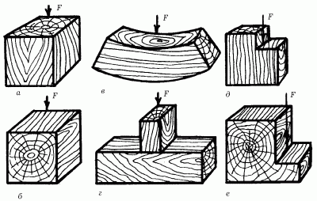
Рис. 74. Испытание прочности древесины: а – на сжатие и смятие вдоль волокон; б – на изгиб поперек волокон; в – на сжатие и смятие поперек волокон; г – на местное смятие поперек волокон; д – на скалывание вдоль волокон; е – на скалывание поперек волокон.
Нет такого бруска древесины, на котором бы не прослеживалось направление роста волокон. Наиболее полное представление о том, что получится из выбранного бруска, может возникнуть только в том случае, если распилить брусок по трем направлениям: под углом 45°, вдоль волокон и поперек них.
Срез под углом 45° называется тангентальным и дает текстурованный рисунок в виде конусообразных линий.
Срез вдоль волокон дает радиальный срез, показывающий параллельные линии волокон.
Срез, проходящий поперек волокон, по сути дает текстурованный рисунок из годичных линий. Такой срез так и будет называться – поперечным.
Если правильно расположить на бруске задуманный чертеж, то внешний вид будущего изделия только от этого выиграет. Кроме того, сложность и красота будущего рисунка напрямую зависят от сложности текстуры древесины.
Породы древесиныВ зависимости от того, что вы желаете сделать, используют ту или иную породу древесины. Прежде всего необходимо определить, принадлежит ли выбранный вами брусок к хвойным или лиственным породам. У хвойных пород преобладает резкий, смолянистый запах. Кроме того, макроструктура таких пород дерева лучше выделена, чем у лиственных.
К хвойным породам относятся сосна, ель, пихта, кедр.
Сосна очень часто используется как строительный материал. Окраска древесины бывает как красновато-желтая, так и бледно-желтая. Стоит заметить, что это нисколько не сказывается на рабочих свойствах древесины. Древесина у сосны прочная, легкая и не вызывает никаких затруднений при обработке. Кроме того, из-за высокого содержания смолы она очень устойчива к гниению и воздействиям атмосферных явлений.
Мягкая структура сосны позволяет легко впитывать различные красители. Это относится и к лаковым покрытиям. При просушке сосновая древесина практически не деформируется.
Ель является вторым по значимости и использованию видом древесины. В сравнении с сосной ель во многом уступает ей. Прежде всего это вызвано большим количеством сучков на поверхности древесины. Да и обрабатывать ее значительно труднее, чем сосну. Смолы в ели немного меньше, что сказывается на ухудшении устойчивости к атмосферным явлениям.
Пихта легко поддается обработке и практически не воспринимает химических препаратов. Ее древесина из-за незначительного содержания смолы быстро загнивает при нахождении на открытом воздухе.
Кедр, или, как его еще называют, сибирская сосна, по своим строительным качествам не уступает ели, а иногда даже превосходит. Его древесину очень легко обрабатывать, но при этом он не очень устойчив к загниванию.
Лиственные породы древесины делятся на твердолиственные и мягколиственные. Древесина данных пород практически не пахнет, а запах появляется только при свежем срезе и обработке. Среди твердолиственных пород наиболее часто используемыми являются дуб, береза, ясень, а из мягколиственных – осина и ольха.
Дуб часто применяется для изготовления красивой, прочной мебели. Кроме того, плотная древесина позволяет украшать детали рельефной резьбой. Высокая прочность и твердость древесины дуба способствует изготовлению мелких, но в то же время прочных крепежных соединений. Из-за высокого содержания дубильных веществ дуб считается самым устойчивым к гниению из всех лиственных пород.
Береза используется гораздо реже, чем ясень. Это объясняется малой устойчивостью к загниванию и подверженностью деформированию. Но сама древесина хорошо поддается обработке, предоставляет возможность делать мелкую рельефную резьбу. Кроме того, древесина березы хорошо пропитывается химическими веществами.
Ясень чаще всего используется при изготовления мебели, шпона и паркета. Такое широкое использование ясеня обусловлено качествами его древесины: прочная, вязкая, долговечная, стойкая к загниванию, с красивым текстурованным рисунком, при сушке мало коробится и хорошо гнется при распаривании.
Строение древесины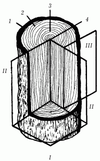
Рис. 75. Основные части ствола и его главные разрезы: 1 – кора; 2 – заболонь; 3 – ядро; 4 – сердцевина; разрезы: I – торцовый; II – радиальный; III – тангентальный.
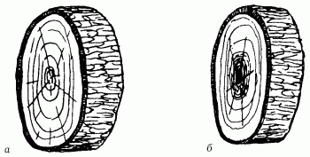
Рис. 76. Породы древесины: а – заболонные; б – ядровые.
Сделав поперечный срез, можно наиболее четко рассмотреть строение древесины. Каждый брусок необтесанного дерева имеет кору. Кора – это кожа дерева, которая не используется в работе, и ее обязательно нужно снимать. Под корой располагается зона роста дерева (камбий), которая практически неразличима невооруженным глазом.
На свежем спиле с растущего дерева слой камбия представлен очень хорошо. После того как кора будет снята, откроется тонкая прослойка влажной ткани зеленоватого цвета – это камбий. За ним расположена древесина с годичными кольцами, которую еще называют заболонью. В центре каждого дерева есть ядро, которое по цвету может сливаться с заболонью или иметь более темный цвет.
В зависимости от этого разделяют заболонные породы древесины, где ядро не имеет ярко выраженной структуры и клетки расположены так же плотно, как и в заболони, и ядровые, где, соответственно, ядро хорошо различимо. Иногда заболонные породы древесины называют безъядровыми.
К ядровым древесным относятся все хвойные (сосна, кедр, ель, тис, лиственница) и некоторые лиственные (дуб, ясень, тополь) породы.
Большинство лиственных пород составляют ряд заболонных, или безъядровых: береза, граб, ольха, клен.
Кроме микроструктуры древесины, то есть плотности расположения древесных клеток, на создание композиции и возможность использования того или иного бруска в работе влияет макроструктура древесины, представленная годичными кольцами и сердцевинными сосудами.
К макроструктуре также относится наличие различных сучков, наростов и неразвившихся побегов (глазков), которые отклоняют годичные кольца и образуют различные свилеватости.
Древесина, где наиболее четко различимы годичные кольца, горизонтальные и вертикальные сосуды, представляется наиболее интересной для обработки.
Усушка древесиныРазличных пороков древесины можно избежать, так или иначе расположив чертеж на заготовке. Но в любом случае для работы надо брать только высушенную древесину, иначе есть вероятность, что после долгого и упорного труда все старания пропадут даром, иначе говоря, изделие растрескается и покоробится. Поэтому перед тем, как приступать к работе, необходимо хорошо просушить заготовку. Но не стоит сразу с сырой древесины отпиливать куски, которые потом не понадобятся. Древесина от этого все равно быстрее не высохнет. При этом можно просто испортить брусок, ведь при просушке волокна сжимаются в тех или иных направлениях по-разному.
Наименьшее изменение размеров бруска произойдет по направлению роста волокон, то есть в радиальном разрезе. Больше всего брусок усыхает в тангентальном направлении.
Все древесные породы по способности уменьшать размеры при сушке можно разделить на 2 категории: сильно усыхающие и слабо усыхающие. К первой категории относятся такие породы, как дуб, липа, вяз, ольха, бук, клен и многие другие. Древесиной второй категории считаются: ива, осина, тополь, сосна. Мало изменяют размеры при усушке только ель и лиственница.
Сушка древесины требует большого терпения. Нельзя сразу класть сырую древесину к сильному источнику тепла. Прежде всего, принеся доски домой, следует подержать их несколько дней на застекленной лоджии и только потом занести в помещение.
Если лоджия не застеклена, то доски рекомендуется поставить в кладовку или в коридор, где температура немного ниже, чем в жилой комнате и тем более на кухне. Очень важно, чтобы в течение нескольких дней доски стояли подальше от сквозняка. Да и на лоджии тоже следует избегать попадания на древесину прямых солнечных лучей, чтобы не получилось, что одна часть заготовки высохла, а другая нет.
Чуть подсохшие доски нужно смазать с торцов садовым варом или клеем ПВА. Заготовки из ценных пород древесины необходимо смазывать не только с торцов, но и с боковых сторон, чтобы при просушке не образовались трещины. Такого же правила стоит придерживаться и при сушке древесины плодовых деревьев. Слой ПВА можно заменить обыкновенной бумагой, которая приклеивается к сторонам бруска крахмальным клейстером.
Приготовленные таким образом бруски и доски укладывают возле батареи центрального отопления, камина или обогревателя. Доски постоянно нужно переворачивать и следить за тем, чтобы температура в комнате была одинаковой, без существенных изменений. Но и сквозняков тоже следует избегать, иначе возрастет вероятность появления трещин.
В зависимости от того, каков размер выбранных заготовок, время их сушки можно варьировать. Толстые и длинные доски, естественно, сохнут намного дольше, чем тонкие и короткие.
Если сушка досок происходит не в помещении, а на открытом воздухе, то обязательно нужно сделать навес, который предохранит древесину от прямых солнечных лучей и атмосферных осадков. Земля под доски должна быть выровнена тщательным образом, чтобы они не изогнулись при хранении и сушке. На землю стелют слой толя, затем ставят несколько небольших одинаковых брусков на расстоянии 60–70 см, чтобы воздух мог свободно проникать под доски. При просушивании большого количества досок нужно перекладывать их брусками через каждые две доски.
Пороки древесины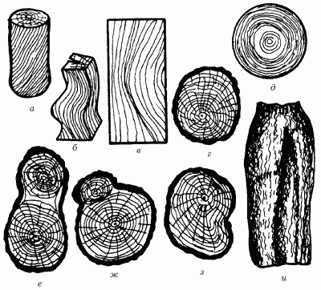
Рис. 77. Пороки строения древесины: а – косослой; б – свилеватость; в – завиток; г – крень; д – внутренняя заболонь; е – двойная сердцевина; ж – пасынок; з – прорость; и – засмолок.
При работе с древесиной следует обращать внимание не только на расположение волокон. Прежде всего требуется внимательно осмотреть со всех сторон выбранный брусок. Древесина для работы должна быть прочной и здоровой: однородной по цвету, без примеси необычных цветов, без признаков поражения древесины червями-точильщиками, а также без следов начавшегося гниения. Если брусок имеет хотя бы один из этих изъянов, то его не следует использовать для работы, так как все труды могут оказаться напрасными и изделие будет иметь непривлекательный вид и очень небольшой срок службы.
Не следует использовать для работы древесину, пораженную грибком. Его можно хорошо заметить даже невооруженным глазом по изменению цвета древесины и по расщеплению волокон в месте поражения. Цвет пораженной грибком древесины может быть различным: от кремово-бурого до синеватого и зеленоватого. Остальная древесина при этом сохраняет привычный цвет.
Зеленоватый налет, появившийся на отдельных участках древесины, свидетельствует о том, что древесина начала гнить. Плесень поражает древесину только снаружи, поэтому, если вы своевременно зачистите поверхность ножом или рубанком, то доску или брусок можно еще спасти, а затем, просушив, использовать в работе.
Цветная гниль не так безобидна, как ядровая. Она поражает древесину изнутри, разрушая ее структуру, и делает невозможным дальнейшее использование материала в работе.
Древесина может быть абсолютно здоровой, но все же не пригодной к работе. Пороки бывают различными: одни из них могут полностью исключить древесину из употребления, другие лишь ограничивают возможности при обработке.
Наиболее распространенным пороком является наличие сучков, которые бывают двух видов. Одни из них прочно срослись с древесиной и убираются из массива только при удалении всего участка.
Другие, наоборот, отделяются очень легко. Именно здесь велика вероятность того, что при сушке уже готового изделия сучок может выпасть и испортить изделие.
Заделать такое отверстие можно при помощи клинообразной пробки, которая вбивается вместо сучка. Кроме того, при долгом хранении древесины как строительного материала в первую очередь чернеют именно сучки. Исключение составляют только некоторые хвойные породы.
К категории дефектов древесины можно отнести и наличие засмолок у хвойных и водослоев у лиственных пород – так принято называть места скопления древесного сока в массиве древесины. При отделке необходимо откачать из этого места смолу и обработать его специальным раствором. Но лучше расположить деталь на бруске так, чтобы кармашек находился либо внутри детали, либо вне ее.
Среди пороков древесины, которые необходимо учитывать при работе, большое место занимает такой порок, как наличие трещин. Они образуются в массиве древесины в период роста древесного ствола. Трещины бывают разными.
Морозные трещины могут разделить весь ствол на две части. Сами трещины идут от внешнего края внутрь и образуются только зимой при сильных морозах.
Отступные трещины возникают только внутри ствола, при этом появляется промежуток между годичными кольцами. Причина образования таких трещин – большое напряжение внутри ствола в период усиленного созревания.
Метиковые трещины, как и морозные, могут разделить ствол на две части. Разница между ними в том, что морозные идут от внешнего края к центру, а метиковые – от основания ствола к вершине.
Трещины при усушке могут образовываться и в древесине без видимых пороков. Такие трещины идут от центра ствола к внешней стороне, поперек годичных колец.
Также к порокам древесины можно отнести наличие волокон. Такой дефект может быть как природным, так и механическим. В любом случае тонкие, узкие заготовки из такой древесины сильно коробятся.
У хвойных пород древесины наиболее часто встречается такой дефект, как крень. Это природный порок, возникающий при сжатости ствола в период роста. Древесные волокна на этом участке расположены близко друг к другу, что значительно увеличивает время пропитки древесины антисептиками и химическими красителями. Но такая древесина очень прочна и устойчива к воздействию атмосферных явлений, так что ее можно приспособить на обивку входной двери на даче или в квартире.
Наличие прироста в древесине само по себе неприятное явление и может создать большие трудности после усушки. Такой дефект возникает при порезе древесного ствола во время роста. Образовавшаяся рана постепенно зарастает, но годовые кольца уже начинают расти несколько иначе.
Виды пиломатериалов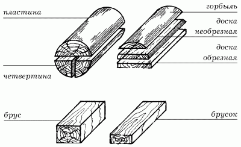
Рис. 78. Виды пиломатериалов.
Чаще всего в магазинах и на лесобазах продается уже высушенная древесина, а сырая встречается довольно редко. В зависимости от того, что планируется сделать, можно приобрести кряж или цельный круглый лес, подвязник, жердь, пластины, четвертины, лежень, брус, обрезную доску, фанеру или шпон.
Кряж представляет собой целые стволы дерева или длинные обрезки ствола без коры.
Подвязник – это ствол без коры, но меньшего диаметра – до 25 см.
Жердь чуть меньшего размера, чем подвязник, диаметр ствола не больше 9 см.
Пластина – это половина кряжа, распиленного вдоль волокон.
Четвертиной называется половина пластины, если она распилена пополам по тому же направлению.
Лежень представляет собой бревно, одинаково обтесанное с двух сторон так, что оно может спокойно укладываться и на один, и на другой бок.
Брус – почти то же самое, что и лежень. Единственное, чем он отличается от лежня, – это ствол, обтесанный с четырех сторон.
Доска может быть самой разной. Все зависит от размеров и от степени обработки.
Шпон представляет собой тонкие пластины древесины не больше 12 мм толщиной, которые прежде всего используются для отделки поверхности. Зачастую пластинки шпона делаются из древесины ценных пород с красивым текстурованным рисунком. Шпон позволяет имитировать большие массивы дорогих пород дерева.
Для отделки используются три вида шпона: пиленый, строганый и лущеный. Самый толстый шпон получается при распиле бруска на дощечки. Такой тип шпона достаточно просто изготовить даже в домашних условиях. Для этого нужно закрепить брусок на верстаке, расчертить его стороны под определенным углом и распилить лобзиком.
Строганый шпон можно получить тоже в домашней мастерской. Для этого необходимо закрепить брусок в тисках и осторожно, как можно равномернее срезать древесину с одной стороны бруска. Для работы следует приобрести специальный нож.
При изготовлении пиленого и строганого шпона получаются небольшие пластинки, ширина которых зависит только от диаметра бруска. Полученные пластинки шпона необходимо складывать по порядку, чтобы потом быстрее подобрать рисунок для отделки.
При изготовлении лущеного шпона, кроме специального ножа, пригодится точильный станок. Брусок берется не прямой, а цилиндрический. Ширина получаемого шпона зависит только от ширины выбранной заготовки. Это единственное преимущество лущеного шпона. Его недостаток состоит в использовании древесины распространенных пород, которые имеют маловыразительный текстурованный рисунок.
Все получаемые виды шпона имеют лицевую и оборотную стороны. Чтобы правильно определить, какой стороной приклеивать шпон к выбранной поверхности, необходимо посмотреть на него под косым лучом света – гладкая сторона и будет лицевой.
Фанера часто используется в столярном деле при изготовлении мебели. Ее размеры могут быть самыми различными. Прежде всего это касается толщины листа фанеры, которая может варьироваться от 3 до 12 мм. В зависимости от того, какие материалы были использованы при изготовлении фанеры, выделяются несколько видов.
Клееная фанера самая простая, но при этом является основой для других. Клееная фанера получается при склеивании трех и более нечетных слоев лущеного шпона.
Если одну из сторон или обе стороны такой фанеры оклеить строганым шпоном из ценных пород древесины, то в результате получится облицовочная фанера.
Обклеив обычную клееную фанеру пленкой под текстуру ценных пород древесины, а потом запрессовав их между стальными полированными листами, получают бакелитовую фанеру.
При склеивании нескольких слоев березового шпона получается достаточно прочная березовая фанера. Но если такую фанеру покрыть слоем краски, а затем еще и нитролаком, все просушить под высоким давлением, то получится очень прочная лакированная фанера, причем стойкая к воздействию атмосферных явлений. Такая фанера сгодится и при обшивке помещения изнутри.
Столярная плита устроена практически так же, как и фанера. Отличие состоит в том, что склеиваются не листы шпона, а рейки. Такая плита обклеивается шпоном из ценных пород древесины. Ее без труда можно сделать и в домашней мастерской. Понадобятся только рейки одинакового размера, клей ПВА и шпон. Если нужна большая плита, но количество реек не позволяет ее сделать, то рейки располагают через небольшие промежутки. Торцы плиты при этом нужно будет заделать рейками определенного размера. Чаще всего столярная плита используется при изготовлении мебели.
Древесно-стружечная плита, или ДСП, напоминает столярную плиту, но здесь используются не рейки, а стружки. Это и объясняет меньшую популярность ДСП при изготовлении мебели. Во-первых, она требует тщательной отделки кромок. Во-вторых, структура ДСП не удерживает в себе ни гвоздя, ни шурупа, да и замок долго держаться не будет. В-третьих, при работе с ней инструмент быстро затупляется. Чаще всего ДСП идет на изготовление основания для мебели.
Стены внешние и внутренние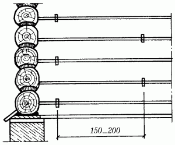
Рис. 79. Сруб. Поперечный разрез.
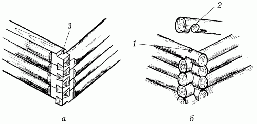
Рис. 80. Рубка углов: а – рубка стен в лапу; б – рубка стен «в обло»; 1 – гнездо; 2 – потайной шип; 3 – коренной шип.
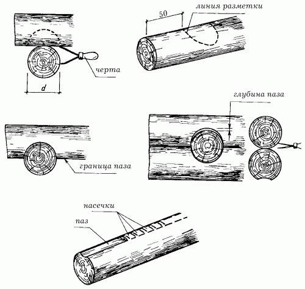
Рис. 81. Рубка углов в обло.
Внешние стены – это лицо дома, его визитная карточка, по которой можно судить о том, деревянный дом или каменный.
Внутренние стены никогда не возводятся без наружной коробки, а только на ее основе.
Для деревянного дома чаще всего внешние стены представляют собой сруб из бревен. Здесь лучше всего использовать бревна сосны или ели, древесина которых в большом количестве содержит смолу, предотвращающую рассыхание и препятствующую воздействию атмосферных осадков.
Сам сруб делается следующим образом: прежде всего подбирают необходимое количество бревен, на каждом конце которых делают либо угловую врубку, либо врубку в лапу. Круглое бревно, уложенное горизонтально, держится довольно плохо, поэтому для его крепления недостаточно сделать врубку только на концах бревна. Такое крепление образует венец из 4 бревен.
Сначала на основание фундамента укладывается окладной венец из толстых бревен дуба. Для того чтобы он прочно лежал на основании, его нужно обтесать с нижней стороны, затем на основание фундамента следует уложить слой гидроизоляции, который не даст бревну гнить под воздействием атмосферных осадков. В качестве такого слоя можно использовать толь или рубероид, которые покрываются широкими досками, просмоленными битумом. На битум укладывается стекловата, просмоленная пакля или войлок, и только потом само бревно.
На этот окладной венец уже помещают бревна, которые и будут образовывать стену. Для того чтобы венцы крепко лежали друг на друге, необходимо в нижней части каждого бревна сделать с помощью стамески и долота полукруглый паз. При укладке бревен каждый венец нужно проложить слоем мха или просмоленной пакли, который закроет все щели между венцами и будет служить хорошей теплоизоляцией.
Кроме того, для дополнительного крепления бревен необходимо на расстоянии 15–20 см в шахматном порядке установить нагели.
После того как сруб достигнет желаемой высоты, укладывают еще 1–2 ряда бревен, накрывают толем или рубероидом, после этого слоем досок и оставляют строительство на год. За это время сруб немного осядет из-за усушки древесины и уплотнения мха или пакли. Чаще всего правильно уложенный сруб дает усадку примерно на 15–20 см, но не больше.
После возведения сруба необходимо его тщательно проконопатить, чтобы в доме сохранялось тепло. Для этого понадобятся пакля и пенька, небольшими кусками которых заделываются все швы между бревнами. Паклю необходимо забивать до предела. Чтобы между венцами не оставалось никаких щелей, дом следует проконопатить дважды: сразу после строительства и после годичной усадки сруба. При этом можно воспользоваться одним из двух способов: внабор и врастяжку.
Первый способ очень удобен в том случае, если между бревнами имеются большие щели. Здесь пряди пакли просто вставляются в паз и только потом углубляются сначала по направлению вверх, потом по направлению вниз.
Второй способ используется при законопачивании небольших щелей. При этом пряди пакли уплотняются лопаткой.
Если щели проконопатить с внутренней и с внешней стороны сруба, то теплоизоляция дома значительно улучшится.
Если хорошо проконопатить стены первый раз и не экономить материал, то при повторной заделке швов понадобится меньше усилий.
При заделке щелей нельзя оставлять без внимания дверные и оконные проемы.
После того как сруб простоял год, необходимо продолжить строительные работы. Прежде всего нужно сделать слив, который защитит от воздействия атмосферных осадков окладной венец. Чаще всего здесь используется оцинкованное листовое железо.
Затем для лучшей теплоизоляции и для защиты стен от воздействия атмосферных осадков стены снаружи оббиваются либо вагонкой, либо рейкой шириной 6–8 см.
Оббивка стен рейкой, кроме того, придает дому более красивый вид.
Также в качестве обшивки стен можно использовать штукатурку, которая защитит древесину от возгорания.
Внутренние стены в деревянных домах лучше делать из брусьев или толстых досок. Они возводятся одновременно со становлением сруба. Для этого, сделав первый окладной венец, нужно распланировать все пространство и наметить расположение стыков стен.
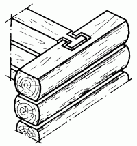
Рис. 82. Способ крепления внутренних стен.
Затем, уложив второй венец, следует сделать Т-образные вырубки под пазы для крепления внутренних стен. На концах брусьев и толстых досок вырезаются Т-образные шипы. Далее при возведении сруба чередуется такое крепление через один венец, чтобы стены оставались прочными и при усадке не образовывались трещины. Между собой внутренние стены крепятся по тому же принципу, что и бревна в срубе. При этом соединять их нужно по мере строительства коробки.
ПерекрытияЕсли при строительстве дома планируется возвести несколько этажей, то необходимо по мере строительства стен закреплять в срубе толстые балки длиной около 6 м. Для этого лучше всего использовать балки, сделанные из бревен сосны, древесина которой очень устойчива к загниванию и поражению насекомыми и грибком.
В зависимости от высоты каждого этажа используют балки различной толщины. Их поперечное сечение рассчитывают следующим образом: на каждый метр высоты этажа приходится 5 см высоты торцевого сечения и 3 см толщины торцевого сечения балки.
Для устройства перекрытия высотой 2,8 м используется балка, высота сечения которой равна 14 см, а ширина – 8,4 см.
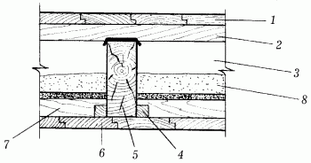
Рис. 83. Междуэтажное перекрытие по деревянным балкам: 1 – пол; 2 —лага; 3 – толевая прокладка; 4 – черепной брусок; 5 – балка; 6 – подшивка; 7 – накат; 8 – засыпка (утеплитель).
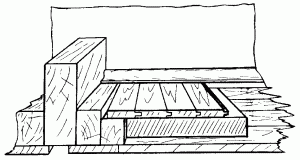
Рис. 84. Перекрытие с открытыми балками.
Для перекрытия на уровне 2,9 м необходима балка с торцевым сечением 14,5 х 8,7 см.
Для перекрытия в 3 м лучше всего брать балку с высотой торцевого сечения 15 см, а шириной 9 см.
Если перекрытие устраивается на высоте 3,1 м, то для него берут балки с торцевым сечением 15,5 х 9,3 см.
Перекрытие на высоте в 3,2 м требует балки с высотой в сечении 16 см и шириной 9,6 см.
Для перекрытия на уровне 3,3 м используется балка с торцевым сечением 16,5 х 9,9 см.
Перекрытие, установленное на высоте 3,4 м, составляется из балок с торцевым сечением 17 х 10,1 см.
Для перекрытия на высоте в 3,5 м используются балки с высотой торцевого сечения 17,5 см и шириной 10,5 см.
Высота, на которой располагается перекрытие, всегда будет на несколько сантиметров больше, чем высота потолка, потому что на нижнюю сторону будут набиваться доски, образующие потолок. К тому же есть вероятность усадки сруба примерно на 5–7 см на этаж. Поэтому, рассчитывая уровень перекрытия, обязательно делают припуск. Если после года усадки перекрытие находится чуть выше, чем предполагалось, не беда. Это намного лучше, чем получившийся низкий потолок, в то время когда ожидалось получить высокий.
Если здание небольшое, примерно в 1–2 этажа, то лучше всего сделать деревянное перекрытие. При строительстве трехэтажного здания тоже можно сделать перекрытие из деревянных балок. Если количество этажей больше трех, то в качестве перекрытия нужно использовать бетонные плиты.
Но вернемся к деревянным перекрытиям. Концы каждой балки, кроме балок над дверными и оконными проемами, должны быть закреплены дополнительно строительными металлическими скобами.
Балки перекрытия укладываются на расстояние от 0,5 м до 0,8 м друг от друга. Для образования прочного перекрытия из балок делают некоторое подобие решетки: балки располагаются перпендикулярно друг к другу, образуя тем самым квадраты. Глубина обрешетки не превышает 15 см, а длина сторон внутреннего квадрата составляет от 0,5 до 0,6 см.
ПерегородкиДля того чтобы разделить все пространство дома на отдельные комнаты, необходимо установить перегородки. Они могут быть одинарными, двойными и тройными, со звукоизоляцией и без нее.
Для устройства одинарных перегородок потребуются неструганые доски толщиной примерно 5 см. Лучше всего выбрать широкие доски, а не узкие. Эти доски прибивают к специальным рамам, основания которых крепятся к подполью и перекрытию. Доски прибиваются внизу и вверху у самых кромок 2–5 гвоздями в зависимости от ширины доски. Для лучшего крепления досок соединение между ними делается на шип или на вставную рейку.
Для того чтобы штукатурка не отставала от поверхности доски, на нее нужно нанести небольшие надколы и насечки. Также можно вбить в массив каждой доски через определенное расстояние небольшие клинья, желательно из твердых пород древесины.
Чтобы сделать двойные перегородки, необходимы широкие доски или щиты шириной примерно 60 см. Они могут быть фанерными, гипсокартонными, из древесно-стружечной или древесно-волокнистой плиты.
Доски и щиты также крепятся на специальные рамы. Из-за того что щиты прибиваются на внешнюю строну, внутри остается пространство, которое нужно заполнить сложенным в несколько слоев толем или рубероидом, стекловатой или строительным картоном.
Тройные перегородки, в отличие от двойных и одинарных, создают хорошую тепло– и звукоизоляцию. Для устройства таких перегородок необходимо установить широкие рамы, которые позволили бы свободно расположить во внутреннем пространстве не только два слоя прокладки, но и слой горизонтально установленных досок.
Прежде всего прибиваются доски внутри рамы. Затем закрепляется слой прокладки и закрывается щитом или вертикально прибитыми широкими досками. В качестве звукоизоляционного слоя можно использовать строительный картон, рубероид, толь, сложенные в несколько слоев, стекловату и стеноблоки. Сверху и снизу готовую перегородку можно укрепить плинтусом.
Пол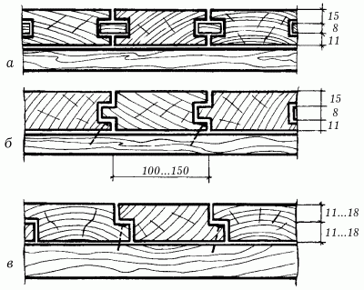
Рис. 85. Соединение досок пола: а – при помощи вставного элемента; б – в шпунт; в – в четверть.
Пол может быть не только дощатым, но и паркетным, плиточным и линолеумным. Выделяются два основных типа пола: пол по грунту и пол по лагам. Первый целесообразно настилать в нежилых помещениях, подвалах и хозяйственных постройках. В этом случае можно использовать практически любой материал, который окажется под рукой.
Глинобитный пол сооружается с помощью последовательной укладки двух слоев глины со щебнем и их тщательного утрамбовывания. Такой пол пригоден для надворных подсобных помещений, при этом он не требует бетонной основы.
При наличии большого количества цемента можно подготовить бетонную основу для пола: на щебенчатый раствор насыпается теплоизоляционный слой из керамзита или шлака, который необходимо перетянуть цементной стяжкой. По такой бетонной подготовке настилается линолеум, ДВП или укладывается керамическая плитка. В процессе работы желательно использовать тот же самый цементный раствор, что и для стяжки.
В жилых помещениях следует настилать полы по лагам или установленным над цоколем балкам. Лаги следует расположить параллельно окнам. Толщина их должна составлять приблизительно 5 см, ширина – 10–12 см.
В качестве опоры для лаг лучше всего подойдут бетонные или кирпичные столбики сечением 25 х 25 см и высотой 14 см. Если столбик кирпичный, рекомендуется использовать красный, хорошо обожженный кирпич. Силикатный кирпич применять категорически запрещается. Верхние кирпичи в столбике нужно располагать перпендикулярно к лаге.
Расстояние между осями лаг не должно превышать 50 см и быть меньше 40 см. Расстояние от крайних лаг до стен должно составлять 3 см, а расстояние между столбиками вдоль каждой лаги – 1 м или чуть меньше, если лаги тонкие. Укладывать лаги нужно на деревянные прокладки толщиной 2,5 см и размером 15 х 25 см. Эти прокладки следует изолировать двумя слоями рубероида.
Все лаги должны лежать строго горизонтально и на одном уровне. Для выравнивания можно просто менять прокладки или прокладывать, если необходимо, обрезки досок нужной толщины. Не следует забывать об обработке антисептиком как прокладок, так и лаг – это непременное условие для того, чтобы не приходилось перестилать пол каждый год.
Дощатый пол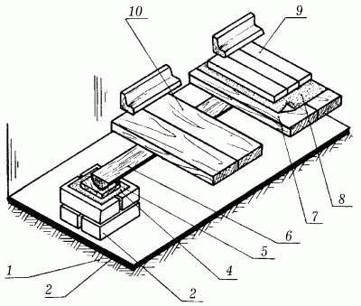
Рис. 86. Схема устройства дощатого пола по грунту: 1 – уплотненный грунт основания; 2 – подстилающий слой из щебенки и бетона; 3 – кирпичный столбик; 4 – слой толя или рубероида; 5 – подкладки; 6 – лаги; 7 – дощатый пол; 8 – слой картона; 9 – паркетный пол; 10 – плинтус.
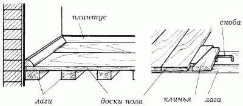
Рис. 87. Сплачивание досок пола.
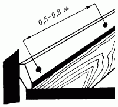
Рис. 88. Крепление плинтуса.
Дощатый пол давно используется в домах различных конструкций, так как он удобен и практичен.
Для пола из досок следует применять струганые, сухие доски, предпочтительно обрезные, толщиной от 2 см. Лучше всего использовать шпунтованные доски-сороковки шириной до 15 см, которые не требуют пристрожки кромок.
Перед настилкой доски необходимо нарезать по размеру. Чтобы при стыковке досок по длине их примыкание было наиболее плотным, необходимо тщательно отпиливать концы досок по угольнику. Нужно внимательно следить за тем, чтобы стык досок приходился непосредственно на ось балки или лаги, а также в обязательном порядке прибивать концы досок.
Обычно сначала укладывают первую доску с небольшим отступом от стены (приблизительно на расстояниие 1,5–2 см), на случай каких-либо деформаций, причем паз этой доски должен быть направлен в сторону стены.
При работе следует использовать гвозди длиной 8–12 см и забивать по два гвоздя в каждую лагу. Шляпки гвоздей хорошо сплюснуть и утопить в толще досок на 4–5 мм, потому как такие сплющенные шляпки не так сильно бросаются в глаза и намного легче входят в древесину. Забивают гвозди обычно немного наискось, наклонно.
Для того чтобы пол был ровным, соседние доски устанавливают таким образом, чтобы годичные (свидетельствующие о возрасте) слои дерева были направлены в разные стороны. Особое внимание должно быть уделено торцам: их нужно подгонять с наибольшей точностью.
Покоробленные доски следует укладывать попеременно вверх и вниз, а затем вбивать между ними клинья, чтобы доски были очень плотно пригнаны друг к другу.
При настилке полов можно использовать скобы. Прибив первую доску, к ней приставляют следующую. Затем в лаги нужно вбить обычные скобы так, чтобы они находились от кромки крайней доски на расстоянии 5–7 см и образовывали зазор, в который следует поставить предохранительную планку и клин. Клин с силой вбивают, в результате чего кромки досок плотно прижимаются друг к другу. Только после этого доски прибивают гвоздями, а скобы вынимают и кладут новые доски. Необходимо следить за тем, чтобы зазор был не более 1 мм, а длина гвоздей превышала толщину настилаемых досок не менее чем в 3 раза.
Вторая молодость полаСовсем необязательно настилать новый пол каждый год. Бывает так, что доски износились, некоторые из них требуют замены, между досками образовались чересчур большие щели или же доски просто прогибаются под тяжестью ног. Вот тогда имеет смысл задуматься о перестилке пола.
Обычно полы перестилают так, чтобы между наружными стенами и досками был зазор 2 см, а между внутренними стенами – 1 см. Эти зазоры необходимы для того, чтобы осуществлять вентилирование подпола и чтобы доски не загнивали от соприкосновения с холодными стенами. Если доски каким-то образом намокнут, свободное пространство для расширения гарантировано.
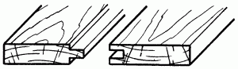
Рис. 89. Шпунтованное соединение.
Образовавшейся между стеной и полом щели не будет заметно, если закрыть ее плинтусом.
Как правило, доски прогибаются в силу того, что редко уложены лаги. Значит, в этом случае требуется немного передвинуть лаги и добавить новые или, не передвигая, вставить между лагами несколько дополнительных.
Если ситуация вынуждает отрывать доски от пола, сначала отрывают плинтусы, а затем первую и последующие доски. При этом рекомендуется метить их. Когда все гвозди выдернуты, пристрагиваются кромки досок, доски укладываются по порядку, но не прибиваются.
Прибивать доски следует только после того, как будет проверена плотность примыкания кромок друг к другу. Прибивая, следует плотно сплачивать доски.
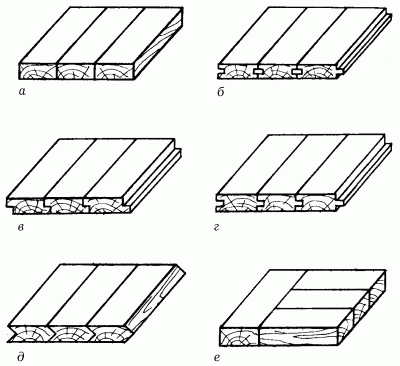
Рис. 90. Виды сплачивания: а – на гладкую фугу; б – на вставную фугу; в – в четверть; г – в прямоугольный паз и гребень; д – в треугольный паз и гребень; е – с наконечником.
Если в доме наблюдается рассыхание пола, то, как правило, результатом этого становится образование щелей между досками. Это значит, что пол был настлан из недостаточно сухого дерева.
Естественно, что в этом случае пол нужно перестилать, правда, лучше всего это делать по прошествии некоторого времени – года-двух после первоначальной настилки. За это время доски подсохнут и размер их станет постоянным. Лучше всего приступать к перестилке пола по окончании зимнего отопительного сезона: доски будут сухи, как никогда.
А вот в летнее время, когда погода крайне переменчива, доски впитывают в себя куда больше влаги, чем зимой. Поэтому перестилать пол летом следует в то время, которому предшествовала хорошая, сухая погода в течение недели.
Во время перестилания пола необходимо проверять все балки и лаги, чтобы в случае необходимости выровнять их и уплотнить. Также нужно удостовериться в том, что все доски плотно прилегают к балкам или лагам и не колеблются. По мере возможности следует избегать подкладывания клиньев под балки, доски или лаги: они могут запросто выпасть, а это приведет к тому, что пол начнет напоминать зыбучие пески. Если все же пришлось прибегнуть к щепкам или клиньям, то их нужно зафиксировать гвоздями.
Не следует прислушиваться к советам разных доброхотов, которые призывают не перестилать полы, а просто вставлять рейки в образовавшиеся щели, так как тонкие рейки, намокая, задираются, а когда засыхают – трескаются, образуя при этом заколы. Это в конечном счете приводит к получению заноз и ран.
При перестилании отдельных участков пола нужно в образовавшиеся зазоры вставить доски необходимой ширины, прочно прибить их гвоздями и застрогать вровень со старыми досками.
Когда же доски сильно износились и пол требует полной перестилки, то получить ровную поверхность всего пола можно только после укладки досок оборотной стороной вверх. Это удобно, так как намного легче выстрогать оборотную сторону досок, чем просто выровнять их.
При перестилании пола важно помнить, что те доски, которые производят благоприятное впечатление своим внешним видом (то есть они чисты и без видимых дефектов), следует укладывать в комнатах. А доски с дефектами лучше использовать в коридорах и затемненных помещениях.
Пол из ДСП и ДВППол из древесно-стружечных плит настилают в сухих помещениях по деревянным лагам, пропитанным антисептиком и уложенным с интервалом 0,4 м. Ширина плит должна быть кратной величине интервала между лагами с необходимым припуском на опиловку кромок. Края ДСП менее водостойки, чем ее основная часть, поэтому их необходимо предварительно отпилить приблизительно на 100 мм по ширине.
Плиты должны быть прямоугольной формы и преимущественно одинакового размера для одного помещения. При установке их тщательно подгоняют друг к другу и прикрепляют к лагам гвоздями. Настилать плиты необходимо с таким расчетом, чтобы получилось как можно меньше стыков, особенно в местах наиболее интенсивного воздействия на пол – в дверных проемах и в середине помещения. Между лагами и стенами необходимо оставить зазор шириной около 30 мм.
Правильность расположения лаг проверяют 2-метровой рейкой. После установки плинтусов стыки между плитами шпаклюют масляной шпаклевкой. После высыхания зашпаклеванные места зачищают шкуркой, а пол окрашивают масляной краской.
Полы из ДВП бесшумны при ходьбе, хорошо моются, устойчивы к истиранию, меньше пылятся, имеют хороший внешний вид. По панелям с пустотами насыпают слой песка толщиной 50–60 мм и делают цементно-песчаную стяжку толщиной 3 мм. После высыхания стяжку очищают от грязи и покрывают битумной грунтовкой. Через двое суток, когда грунтовка подсохнет, на стяжку наносят горячую битумную мастику с температурой не ниже 160° и укладывают твердые плиты Т-400 толщиной 4 мм. Горячая мастика быстро остывает, поэтому за один раз наносить ее нужно только под один лист.
Изготовление дверного полотнаВ ряде случаев может возникнуть необходимость изготовить дверь своими руками. Ниже описана простейшая конструкция легкого и не требующего больших затрат дверного полотна.
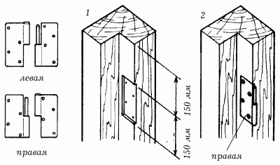
Рис. 91. Установка петель: 1 – вырезка гнезда под петлю; 2 – установка правой половины петли.
Для его изготовления необходимо взять деревянные бруски сечением 50 х 50 мм и обрезать их в соответствии со снятыми мерками. Получится два вертикальных бруска и пять или шесть горизонтальных брусков (при увеличении их количества прочность конструкции возрастет, но одновременно увеличится ее вес).
В вертикальных брусках вырезаются пазы, в которые затем должны будут войти края горизонтальных брусков, обработанные для этого соответствующим образом.
Проведя тщательные замеры в той части будущего дверного полотна, которым оно будет крепиться к коробке, вырезают пазы для дверных петель.
После этого можно приступать к сборке. Для этого все детали конструкции раскладываются на полу и соединяются с помощью столярного или казеинового клея и шурупов. Когда клей высохнет, дверное полотно обивается древесно-волокнистой плитой с помощью мелких гвоздиков и клеящего состава.
Для увеличения тепло– и звукоизоляции внутрь полотна можно поместить любой изолирующий материал, например стекловату.
У этой конструкции есть и недостаток: края ДВП со временем превращаются в лохмотья. Чтобы избежать этого, после обивки каркаса ДВП по периметру всей торцевой части можно пришить 5–10-миллиметровые планки, закрывающие облицовку. В этом случае саму коробку нужно сделать чуть меньше дверного проема, с учетом набитых планок. Планки можно прибивать только после того, как ДВП будет закреплена и пристругана со всех сторон.
Техника безопасности при работе с древесинойСтатистика есть статистика и от нее никуда не денешься. Если просмотреть данные по смертности и разным физическим увечьям, которые получают люди в различных ситуациях, то на первом месте, как ни странно, стоят ожоги, ранения и поражения электротоком при выполнении работ по дому. Второе место принадлежит автомобильным авариям.
С каждым годом это соотношение остается неизменным. Кроме того, развитие техники, которое направлено на облегчение работы с определенным видом материала, еще больше усложняет ситуацию.
Поранить себя очень легко. Даже если взять в руки обыкновенную пилу или молоток, не умея правильно обращаться с ними, то легко можно получить увечья различной степени тяжести.
Прежде всего, если берут в руки какой-либо инструмент, внимательно знакомятся с инструкцией по его эксплуатации и только потом приступают к работе. Но даже если такой инструкции нет, то это еще не значит, что можно не соблюдать элементарные правила безопасности.
Самое первое из них гласит, что для работы пригодны только инструменты в хорошем состоянии. Их рукоятки должны быть целыми и без трещин, удобно располагаться в руке, металлическое полотно – без ржавых пятен, а режущие кромки – острые. Кроме того, у всех используемых пил зубья должны быть разведены.
Самым опасным ручным инструментом является тупая пила. Используя такую пилу в работе, можно не только глубоко порезать себе пальцы и занести в рану инфекцию, но полностью лишиться их. А произойти это может следующим образом. Тупой пилой редко когда удается сделать надпил на поверхности древесины: она часто срывается то вправо, то влево, а при нажиме сгибается чуть ли не пополам.
В результате пила попадает на пальцы или ломается, а ее осколки летят в глаза.
Второе правило касается непосредственной работы с инструментом. Большинство работающих направляет свои движения так, как удобно, а не так, как следовало бы. Хотя направлять все движения режущего инструмента надо от себя.
В противном случае лезвие может соскользнуть и пройтись по пальцам так, что потом охота что-нибудь делать по дому пропадет на долгое время.
При работе с электрическими инструментами нужно проверять не только режущую способность инструментов, но и электропроводку, а также помещение, в котором осуществляется работа.
Работа со стеклом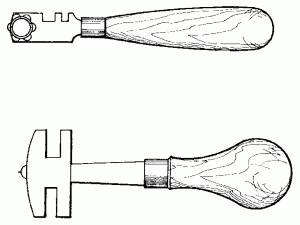
Рис. 92. Стеклорезы.
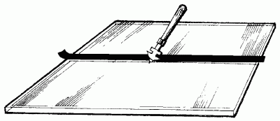
Рис. 93. Резка стекла с применением изоляционной ленты.
Техника резания стекла несложна, однако требует предельной аккуратности. Стекло кладут на абсолютно гладкую поверхность (например, пластиковую столешницу кухонного стола). Стеклорез нужно держать так, чтобы указательный палец находился сверху, а сам инструмент занимал положение, близкое к вертикальному. Стеклорезом работают, используя линейку или ровную рейку. Вместо рейки можно также применять изоляционную ленту.
Резать начинают с дальнего края полотна. Стеклорезом проводят по поверхности на себя только один раз, равномерно нажимая на стекло. При этом стекло должно издавать слабый потрескивающий звук.
Если стеклорез острый, но все же не дает надреза при нормальном давлении, его надо намочить в керосине.
При правильной работе хорошим стеклорезом на стекле должна остаться тонкая бесцветная черта. Если же она выглядит грубой царапиной белого цвета, значит, режущее движение было неправильным или стеклорез успел затупиться. Затупившийся роликовый стеклорез можно наточить на мелкозернистом наждачном круге.
Если надрез не получился с первого раза, можно перевернуть стекло и повторить попытку с другой стороны.
Прежде чем отломить стекло, под него нужно подложить в конце надреза спички. Для того чтобы сделанный надрез превратился в ровный отлом, по нему осторожно постукивают снизу молоточком, а затем отламывают резким движением. Небольшие кусочки отламывают при помощи специальных боковых вырезов, имеющихся на стеклорезе, или при помощи плоскогубцев.
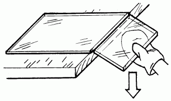
Рис. 94. Отламывание стекла.
Чтобы вырезать в стекле большое круглое отверстие, необходимо вначале высверлить в центре маленькое отверстие, затем укрепить в нем один конец проволоки или гвоздь, а к другому ее концу прикрепить стеклорез и прорезать им окружность.
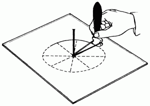
Рис. 95. Вырезание отверстия в стекле.
Затем стеклорезом проводят по линейке несколько радиусов от отверстия к линии окружности. После этого берут стекло в руки и с обратной стороны осторожно ударяют деревянной рукояткой молотка. Вырезанные части стекла должны вывалиться. Выбивать вырезанные части желательно в воде, что уменьшает вероятность повреждения стекла.